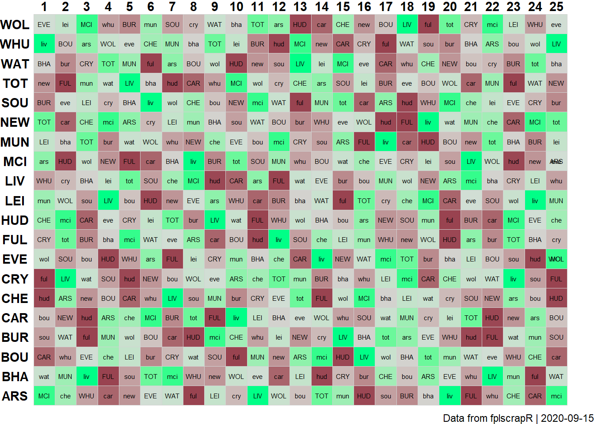

vignettes/afdrtable.Rmd
afdrtable.RmdSuppose now we are interested in creating an FPL fixture table that ranks fixtures by the ‘Alternative FDR’ (aFDR) metric? Again, we take the first 25 gameweeks of the ’18 season as an example.
First we create the aFDR rankings table, by fetching the gameweek-by-gameweek details of ALL players using get_player_details, and then transforming that using dplyr:
##
## Vedhæfter pakke: 'dplyr'## De følgende objekter er maskerede fra 'package:stats':
##
## filter, lag## De følgende objekter er maskerede fra 'package:base':
##
## intersect, setdiff, setequal, uniondf <- get_player_details(season = 18) # this may take a while to load as it fetches ALL player details
afdrranks <- df %>%
filter(round %in% 1:25) %>% # filtering for the gameweeks we are interested in.
group_by(opponent_team) %>% # transformation to group and summarize the total_points (scored by a given player in a given round) by the opponent ('opponent_team') variable level
summarize(sum(total_points)) %>%
arrange(`sum(total_points)`) %>% # ordering (arranging) by total_points allowed
mutate(oppo=recode(opponent_team,"1"="ARS","2"="BOU","3"="BHA","4"="BUR","5"="CAR","6"="CHE","7"="CRY","8"="EVE","9"="FUL","10"="HUD","11"="LEI","12"="LIV","13"="MCI","14"="MUN","15"="NEW","16"="SOU","17"="TOT","18"="WAT","19"="WHU","20"="WOL")) # here we transform the numbered team labels to the FPL short letter namesNext, we fetch the full fixture list using get_game_list:
FPL only lists the fixtures once, as HOME-AWAY, but we need both HOME-AWAY and AWAY-HOME to plot the full fixture table. We need to plot every fixture twice, once as a home game for the one team, and once as an away game for the other team.
Using R base’s rbind and dplyr’s mutate (creating new variables) we essentially just duplicate the fixture table:
afdrfixtures <- rbind(
gamelist %>% mutate(team=home,oppo=away,homeaway="home"),
gamelist %>% mutate(team=away,oppo=tolower(home),homeaway="away"))Then we need to add in the aFDR ranking for each fixture, doing so through a loop (which is decidedly not the most efficient method). For each row, we identify the data point in the afdrranks data frame that provides the aFDR ranking for each team in question:
for (i in 1:nrow(afdrfixtures)){
afdrfixtures$afdr[i] <- afdrranks$`sum(total_points)`[which(afdrranks$oppo==toupper(afdrfixtures$oppo[i]))]
}Next we use dplyr and ggplot2 to plot the data in a fixture table:
library(ggplot2)
afdrfixtures %>%
filter(GW %in% 1:25) %>% # filtering for the gameweeks we are interested in
ggplot() +
geom_tile(aes(x=GW,y=team,fill=afdr),colour="lightgrey") +
geom_text(aes(x=GW,y=team,label=oppo),size=2) +
theme_void() +
theme(axis.text = element_text(face = "bold")) +
theme(axis.text.y = element_text(margin=margin(0,-20,0,0))) + # fixing the margins
scale_x_continuous(position="top",breaks=1:25) +
labs(caption=paste("Data from fplscrapR | ",Sys.Date(),sep="")) +
scale_fill_gradient2(guide=F,low="#00FF87",mid="#D6DCD8",high="#7F002D",midpoint=median(afdrfixtures$afdr)) # creating a gradient colour-coding that spans from lowest aFDR ranking (coloured red) to highest (coloured green)